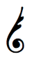
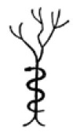

XV. BÖLÜM
ANTİK DİNİ KAVRAMLAR
Max Müller şöyle diyor: “Din, akıl ve mantıktan bağımsız olarak; akıl ve mantığa rağmen insanın Sonsuz’u farklı isimler ve farklı kılıklar altında görmesini sağlayan zihinsel bir kabiliyettir. Bu kabiliyet olmasa hiçbir din, put ve idollere tapılan en aşağı dinler bile mümkün olmazdı ve eğer dikkatlice dinlersek tüm dinlerde ruhun bir iniltisini, anlaşılamayanı anlama, söylenilemeyeni söyleme çabasını, Sonsuz’a olan özlemi, Tanrı sevgisini duyabiliriz.”
“Dinin amacı, onu nerede bulursak veya onunla nerede karşılaşırsak karşılaşalım, daima kutsaldır. Ne kadar kusurlu, ne kadar çocukça olursa olsun, din her zaman insan ruhunu Tanrı’nın huzuruna çıkarır ve Tanrı kavramı ne kadar kusurlu, ne kadar çocukça olursa olsun, her zaman insan ruhunun, o an için ulaşıp kavrayabileceği en yüksek mükemmeliyet idealini dile getirir.”
“Her mitoloji, insan aklının, Evren’in gizemlerini; gökyüzünü, güneşi, gezegenleri, rüzgarı ve bulutları, yazı ve kışı, şafağı ve karanlığı ve cahil insanın basit aklı için doğaüstü bir öneme sahip olan tüm temel olguları açıklamak için sarf ettiği ilk çabanın bir sonucu olarak ortaya çıkar.
“Bir efsane; bir kavram, bir fikir olarak başlar. Akıl onu cisimleştirecek ve temsil edecek gerçekler üretir. Efsaneler, ilkel insanın olayları doğanın etkisi altında kendisine ifade etme yöntemidir.”
Müller, “İlk Dinler”de şöyle diyor: “Bir bakıma bütün dinler başlangıçlarında gerçek din olmuştu. Kendi zamanlarında mümkün olan tek din bunlardı. Her neslin dili, düşünceleri ve duygularıyla uyum içerisinde ve dünyanın yaşına uygundular. Bu sebeple antik dinlerin belirgin saçmalıklarını, budalalıklarını ve hatalarını en merhametli biçimde değerlendirmeliyiz. İlkel insanın düşünce ve duyguları hakkında en ufak bir fikre sahip olduğumuz andan itibaren onun bir dine; bir inanç veya ibadet, ahlak veya mutluluk dinine; tanrılara karşı duyulan korkunun, umudun, şüphenin veya saygının dinine sahip olduğunu görüyoruz.
İlkel toplumların dinine yaklaşmak için onun, tabiri caizse kalbine girmeli ve yaşam akışını hissetmeliyiz. Bu antik insanlara sempati göstermeli; onların ilahi ve dualarına kulak vermeli, ayin ve törenlerine şahit olmalı, dini ideallerini öğrenmeye çabalamalıyız. Thales her şeyin tanrılarla dolu olduğunu söylediğinde ve Buda, Ulu Varlık dışındaki tüm tanrıların varlığını reddettiğinde, ikisi de kendi dini kanaatlerini bildiriyordu.
Dinin, yabancılara gösterilen dış yüzüne fazla güvenilmemeli. Hristiyanlığın ilk ve en saf olduğu zamanlarda, inanmayan yazarlar arasında en aydın olanların sözlerine inanırsak, Hristiyanlık dini hayvanlara tapınmaktan ibaretti. Bu fikir muhtemelen, bebek İsa’yı emziren Meryem’in ilk resimlerinde başında Mısır tanrıçası Sati’nin inek boynuzlarıyla, bazen de Hathor’un boynuzlarıyla temsil edilmesinden kaynaklanıyordu.”
Ölüler Kitabı’ndan: Hathor, Mısır dilinde “boynuzdan ev” anlamını taşır. Hathor sıklıkla İsis’in nitelikleriyle tasvir edilir. Hathor yalnızca güzel olanı değil, gerçek olan her şeyi temsil eder. İsis, Tanrı’nın dişi veya yaratıcı yönünün kişileşmiş hâliydi. Sati, Hathor ile aynı özellikleri taşıyordu. Yukarı Mısır’ın öküz boynuzlu tacını takıyor ve anneliği simgeliyor.
Müller, “Atalara Tapınma”da şöyle diyor: “Atalara tapınmak, ilkel insanların ölümden sonra da devam eden sorumluluklara olan inançlarından ortaya çıktı. Bu ibadet türü, gelişimin belirli bir aşamasında, tüm insanoğlu için neredeyse evrensel bir hâldedir. Bunun izleri dünyanın her yerinde bulunuyor. İbrani-lerin dini fikirleri, atalara tapınmanın izlerini gösteriyor. İbraniliğin babasının özel Tanrısının, yani İbrahim’in konuştuğu ve şahsi münasebette bulunduğu aile Tanrısının atasal bir kutsallığı temsil ettiği yönünde belirgin işaretler var.”
Birtakım antik metinler sayesinde, atalara tapınmanın Mu’nun yok oluşundan kaynaklandığı sonucuna vardım. Atalara tapınmak veya onlara duyulan saygı, özellikle Mısır’a ait kutsal ayin ve törenlerde göze çarpıyor, Mu’daki atalar ise bunların ana fikrini oluşturuyor. Buna bazı Maya anıtlarındaki yazıtlarda ve Yunan alfabesinde de rastlanıyor.
Müller, “Dini Yasaların Kökeni”nde şöyle diyor: “Dini yasa koyucunun, sıradan ölümlülere kıyasla Tanrı’ya daha yakın olduğu inanışı, birçok ulusun antik gelenekleri arasında yer alıyor. Diodorus Siculus’taki meşhur bir bölüme göre Mısırlılar, yasalarının Mnevis’e Hermes tarafından iletildiğine inanıyorlardı. Giritliler, Minos’un yasaları Zeus’tan aldığını söylüyorlardı. Spartalılar, Lykurgos’un yasalarını Apollon’dan aldığına inanıyorlardı. Ariler, Zathraustes’in bunları İyi Ruh’tan edindiğine inanıyorlardı. Gatel’e göre Zamolscis yasalarını tanrıça Hestia’dan, Yahudilere göre Musa da yasalarını tanrı Iao’dan almıştı.43
“Arilerin, Yahudilerin ve Turanlıların, bu eski ırklar parçalanıp ayrı bir dile, dine ve ulus bilincine kavuşmadan önce temel bir dinleri vardı. En yüksek Tanrı; Hindistan, Yunanistan, İtalya ve Almanya’nın antik mitolojisinde aynı adı almış; Himalayalarda, Dodona’nın meşe ağaçları arasında veya Almanya’nın başkentinde ya da ormanlarında yapılan ibadetlerde bu adı korumuştu. Adı Sanskritçede Dyaus, Yunancada Zeus, Latincede Jovis ve Almancada Tiu idi. Homer ve Veda’dan belki binlerce yıl önce, tüm Ari ırkının atalarının aynı adı taşıyan görünmez bir varlığa, dillerindeki en iyi ve yüce kelimelerle, Işık ve Gökyüzü olarak adlandırılan bir varlığa taptıklarını, dün kendi şahit olduğumuz bir olay kadar canlı bir biçimde gözümüzün önüne getiriyorlar. Şimdi fikrimizi değiştirip bunun her şeye rağmen doğaya tapınma veya putperestlik olduğunu söylemeyelim. Hayır, niyetlenilen bu değildi ama ileri zamanlarda yozlaşarak bu hâle gelmiş olabilir.
Dyaus, mavi gökyüzü demek değildi, gökyüzünün kişileşmiş hâli de değildi. Bunun başka bir anlamı vardı. Veda’da Dyaus Pitar, Yunancada Zeus Pater ve Latincede Jüpiter yakarışları var. Bu isim, bu dillerde, diller parçalara ayrılmadan önce neyi ifade ediyorsa aynı anlama geliyor. Anlamıysa Gök Baba veya Gökçe Baba”
Owen, Çin’in antik dininden bahsederken şöyle diyor: “Çin’deki, İbrahim zamanına dayanan en eski klasikler harika bir Tanrı bilgisine işaret ediyor. Bu klasiklerde Tanrı hakkında, Kitabı Mukaddes’in benzer parçalarıyla yan yana durmayı hak eden parçalar var. Tanrı her şeye kadirdi, her şeyi bilirdi ve her yerdeydi; dünyanın manevi yöneticisi ve insanın adil yargıcıydı.”
İnsanoğlunun ilk dini, Tanrı ibadetinin basit ve saf hâliydi. Sonradan içine sızan aşırılıklar, rahiplerin sorumluluğuna verilen tüm büyük fikirlerin uğradığı kaçınılmaz yozlaşmanın sonucuydu. Esas din, birçok detayla anlaşılmaz hâle geldi ve bozulmalarla, uydurmalarla ve yanlış yorumlarla örtüldü.
Mısırlı tarihçi Manetho bize “hayvanlara tapınmanın Mısır’a 11. Hanedan’ın ikinci kralı zamanında girdiğini” anlatır. Tüm Mısır araştırmalarımda ilk hanedanlar zamanında hayvanlara tapıldığına dair en ufak bir iz bulamadım. Kufu ile II. Ramses arasındaki zamanda bile bunun adına çok az rastlanıyor. Öte yandan, Mısırlıların oldukça erken bir zamanda, temsil ettikleri kavramlar yerine sembollerin kendisine tapmaya başladıkları açıkça görülüyor, bu da hayvanlara tapınmaya giden ilk adımdı.
Manetho şöyle diyor: “Hayvan formundaki tanrıların ölülerin mezar odalarında resmedilmesi 18. Hanedan’a kadar görülmemişti. III. Tuthmosis zamanında, mumyalanmış sembolik bir hayvan başına sahip bu sembollere sık rastlanıyor. Ramses’in hükümdarlığından sonra hayvanlara tapınma arttı ve büyük ölçüde yayıldı.”
Bu, güç ve zenginliğe olan açlıklarıyla Thoth tarafından Sais’te öğretilen saf, basit ve güzel Osiris dinini kendi çıkarları için yozlaştıran, ahlaksız rahiplere bir örnek.
Antik kayıtlardan anlaşıldığı kadarıyla, yaklaşık M.Ö. 2000 yıllarında dünyanın her yerinde dinler bozularak, birçok yerde acımasızca insan kurban etmeye başladılar. Yalnızca Musa buna karşı çıkarak halkını doğru yolda tuttu. Onlara “Tanrı’nın ayrıcalıklı halkı” deniyor. Tanrı ibadetini korumak ve devam ettirmek için seçildiklerinde ayrıcalıklı olmuşlardı. Sınanmışlar ve kusurlu bulunmamışlardı.
Dünyanın ve insanın yaratılışı, insan aklında daima önemli bir yer tutmuştur, zira insanın düşünceleriyle ilgili en ufak bir fikir sahibi olduğumuzda, onun bir Yaratılış kavramına sahip olduğunu görüyoruz. Bunun tarih öncesinin bilgelerine, daha yakın zamanın filozoflarına veya bugünün vahşi yamyamlarına ait olması bir önem taşımıyor, Yaratılış kavramlarının tümü özünde aynı. Söyleniş biçimleri az çok değişebilir, fakat ana fikirleri tamamen aynıdır. Bu da ortak bir kökene sahip olduklarını gösterir.
Bu konu, yani Yaratılış, tarih öncesi ve antik toplumların yazılarının ve geleneklerinin içine işlemiş durumda. Bu gelenekler bize aktarıldı ve tarafımızdan benimsendi, çünkü bilim ve arkeoloji bunların doğru olduğunu gösteriyor.
Tarih öncesi metinlerin tümü sembolik ifadelerle yazılmış ve gerçek nesnelerin isimleri yerine semboller kullanılmış. Buna rağmen, bu sembollerin ne manaya geldiğini bilmek onları okumayı kolay kılıyor. Böylece gerçek anlamlarına ulaştığımız metinler, bizim için tamamen net ve anlaşılır bir hâle geliyor.
Tüm antik gelenekler boyunca, hatta Musa’nın zamanında bile “göğün üstündeki su ve aşağıdaki sular” şeklinde çoğullaştırmayla yapılan bir ayrımı görebiliyoruz. Tüm bu örneklerde su, atmosferin dışındaki uzayı dolduran maddeye karşılık geliyor.
Yaratılışla ilgili tüm inanışların, nerede bulunmuş olurlarsa olsun, ortak bir kökene sahip olduğuna dair en ufak bir şüphe yok. İster Kitabı Mukaddes olsun, ister Hintlilerin, Kaldelilerin, Mısırlıların, Mayaların, Polinezyalıların veya başkalarının inanışları; tümünün asıl kaynakları aynıydı. Bu, insanın ilk zamanlarına, on binlerce yıl önceye, hatta daha da geriye dayanıyor.
Tüm bu inanışların incelenmesi hayret verici bazı gerçekleri okuyucunun gözünün önüne seriyor. Muhtemelen en hayret verici olanı; 12 bin yıldan uzun bir süre boyunca dünyanın geri kalanından kopmuş bir hâlde yaşayan Polinezyalıların Yaratılış ile ilgili inanışlarının, ilk adam ve kadının isimleri, kadının adamın kemiğinden yapılması ve insanın, Tanrı’nın özel yaratımı olması gibi yönlerden Kitabı Mukaddes ile tamamen aynı oluşu. Marquesaslılar ve Polinezyalıların geri kalanı, bu inanışları dış dünyadan edinmiş olamazlar. Polinezya inanışları 12 bin yıl öncesinden başlıyor ve bu tarihten aslında ne kadar geriye ait olduklarını kimse tahmin edemez. Kitabı Mukaddes inanışı yaklaşık üç bin yıl önce Musa ile başladı, bu da onun bir şekilde Musa’ya aktarıldığını kanıtlıyor. Naacal ve Mısırlılar ise bunun hangi şekilde ve kim tarafından aktarıldığını bize gösteriyor.
En uzak çağlardan beri, kutsal bilgeliğin temsilcisi oluşuyla Yılan, bütün halklardan büyük saygı görmüştü. Araştırmalarımda şaşmaz biçimde tüm efsanelerin bir temeli olduğunu, bu temelin ise bir dini hikaye veya inanış olduğunu buldum. Yılan hakkındaki efsane, icat, hikâye ve inanışlar son derece fazla.
Küçük bir araştırmanın sonuçlarını görelim. Eusebius, Mısırlıların Yaratıcı’yı Kneph olarak adlandırdıklarını ve onun sembolünün de bir yılan olduğunu söyler. Bu, eskilerin yılana neden böylesine büyük bir saygı gösterdiklerini açıklıyor. Yılan, onlar için Yaratıcı’nın sembolüydü.
Mayalar oymalarında her şeyin Yaratıcı’sını bir yılanın kıvrımlarına sarılmış hâlde tasvir ediyorlardı. Hintlilerden bu konuyla ilgili öğrenilecek çok şey var. Hindu kitabı Manava Dharma Sastra, Yılan’dan Yaratıcı olarak bahsediyor. Bir Hindu kitabı olan Aytareya Bhramana’da şu sözleri görüyoruz: “Sarpa Rajni, Yılanlar Kraliçesi ve hareket eden her şeyin anası.” ve “Caisha, Yedi Başlı Yılan, Yaratıcı.”
Amerika Mayaları Yaratıcı’yı Ahac-chapat, yani Yedi Başlı Yılan ile simgeliyorlardı. Quiche kutsal kitabı Popol Vuh’tan elimizde şu sözler var: “Yaratıcı, Yaradan, Hakim olan, Tüylerle Kaplı Yılan.”
Yılan hakkında çağdaş yazarlar tarafından yazılanların incelemesini de içeren; antik metin ve yazıtları kullanarak, efsane, inanış ve mitleri göz önünde tutarak ve antik yılan oymalarının nereye ve ne biçimde yerleştirilip kullanıldığını dikkate alarak yaptığım yıllar süren araştırmalar sonunda vardığım sonuçlar şunlar:
1. Günümüz bilim insanları ve yazarları tarafından yazılanların çoğunun en ufak bir temeli yok. Bunlar tamamen kuramsal.
Tüylerle, kanatlarla veya birden fazla baş ile süslenen yılan yalnızca Yaratıcı ve Yaratılış’ın sembolü.
Süssüz yılan suların sembolüydü.
Çember şeklindeki yılan, evreni temsil eden sembollerden biriydi.
Şimdi bu sonuçları neye dayandırdığımı görelim:
1. Süslenmiş Yılan: Bunun Mayalar, Hintliler ve Mısırlıların için Yaratıcı’nın sembolü olduğu gösterildi.
2. Süssüz Yılan Suların Antik Sembolü: Mayalardan, bunun seçilme sebebinin gövdesinin hareketinin okyanus dalgalarına benzemesi olduğunu öğreniyoruz. Bu, anayurtta ortaya çıkmıştı ve oradan Burma, Hindistan, Babil, Yucatan, Orta Amerika, Yunanistan, Anadolu ve Mısır’a yayıldı.
Süssüz yılan suların sembolü olduğu için, sular da doğanın anası olduğundan doğal olarak eskilerin aklında Yaratılış ile bağdaştırıldı. Öte yandan eskilerin, Tanrı ile Doğa’nın Yaratıcı Güçleri arasındaki farkı ortaya koymaya dikkat ettikleri görülüyor. Bunu, Tanrı’yı temsil eden yılanı süsleyerek gösteriyorlar.
Tüm antik metinlerde güneş, daima suları temsil eden süssüz yılanla mücadele edip onu yenerken gösterilir. Bu sembolizmi ele alırken birçok yazar hataya düştü, ikisi de yılan olan suların sembolü ile Yaratıcı’nın sembolünü ayırt etmeyi başaramadı. Güneş, suların yılanıyla mücadele etmiyor, aslına bakılırsa mücadele ettiği bile söylenemez. Mızrak, ok veya cirit, etkinliğin sembolü. Güneşin kuvvetleri sulara nüfuz ederek suyun içinde bulunan kozmik yumurtaları hayata getiriyor.
Mısır’da Horus güneş sembolünün yılan Apophis’in -suların- başını bir mızrakla deldiğini görüyoruz. Yunanistan’da güneşin sembolü Apollo, suların sembolü Python’u alt ediyor.
Hindistan’da Vişnu -güneş- suların sembolü Yılan Anatha’yı alt ediyor. Hristiyanlar da bir yönden bu kavrama sahipler, zira bugün bile Roma Kilisesi, Meryem Ana’yı ayaklarının altında yılanla resmediyor.
3. Çembersel Yılan: Kuyruğu ağzında çembersel bir yılan, evreni simgeleyen en eski sembollerden biri. Bu sembolü Naacal çizimlerinde gördüm. Mısırlılar bunu bazen Tanrı sembollerinin başlıklarının bir parçası olarak kullanırlardı.
Yedi Başlı Yılan, Yaratıcı’nın ve Yaratılış’ın sembolü, bu kitabın ilk bölümünde detaylı biçimde açıklanmıştı.
Ağaç ve Yılan: Yaşam Ağacı ve Yılan hakkında antik ve modern edebiyatı süsleyen sayısız öykü var. Bu öykülerin tümü efsanelere dönüştü ve zamanla ağaç elma verdi. Bu elmalar efsanenin devam etmesi için gerekliydi, çünkü onlar olmasaydı Havva Adem’i nasıl baştan çıkaracaktı? Efsaneye bakılırsa, Adem’in cennetten kovulması için bunlar gerekliydi. Böylece bu efsane sayesinde kadın, erkeğin başına gelen tüm kötülüklerin sebebi olmakla suçlandı. Erkek için muazzam bir korkaklık abidesi, fakat bunun suçlusu Ezra idi. Eğer o Musa’nın yazılarında görülen sembolleri doğru okuyabilmiş olsaydı, yaşlı kurnaz Yılan ve Yaşam Ağacı’nın tamamen farklı bir hikâyesini anlatacaktı.

Yandaki ufak resim Kutsal metinlerden bir alıntı. Öncelikle ilk insanın dini kavramlarına dayanarak, ona dünyada yalnızca tek gerçek yaşam olduğunun öğretildiğinden bahsetmeliyim. Bu, eskilerin zaman zaman insan veya iç insan isimleriyle bahsettiği insan ruhuydu. İnsanın fiziksel bedeni yalnızca geçici bir barınaktı. Yaşam dediğimiz şeyin diğer tüm formları da geçiciydi, topraktan gelmişti ve toprak anaya dönecekti.
Dünyevi yaratımların tüm formları arasında yalnızca insanın, fiziksel bedenini terk edip sonsuza dek yaşayan, ölümsüz bir parçası vardı. Dolayısıyla insan ruhu dünya üzerindeki tek gerçek yaşamdı.
İnsan dünya üzerinde ilk kez Mu ülkesinde ortaya çıktı, dolayısıyla dünyadaki ilk gerçek yaşam Mu’da ortaya çıktı. İnsandan bir meyve olarak da bahsedilmişti. Ağaçlar meyve verir, insan bir ağacın “ilk meyvesiydi” ve meyve ise yaşamdı. Mu ülkesi, Yaşam Ağacı’ydı. Böylece Mu bir ağaçla simgelenmiş oldu: Yaşam Ağacı’yla.
Naacal metinlerindeki desen, ağacı Yılan tarafından sarmalanmış, çevrelenmiş hâlde gösteriyor. Bu süssüz Yılan, Khan olarak adlandırılıyor ve suların sembolü. Mu’nun sularla çevrili olduğu sembolik olarak gösterilmiş. Mu’nun diğer hiçbir kıtayla kara bağlantısı yoktu. Yılan, Mu’yu çevreleyen sulardı. Bunlar Yaşam Ağacı’nın ne olduğunu ve neden üzerine sarılı bir yılan bulunduğunu açık ve anlaşılır biçimde gösteriyor.
Kitabı Mukaddes efsanesinde, Cennet Bahçesi’nin (Mu) etrafında meleklerin, ellerinde ateşten kılıçlarla, Adem ve Havva’nın tekrar içeri girmesine engel oldukları anlatılır. Burada Ezra bileşik bir Mısır sembolünü doğru okumayı başaramamış. Sembol şöyle diyor: “Mu bir ateş uçurumuna düştü. Yeraltının alevleri yükseldi ve o batarken gövdesinin her yanını sardı. Sulara gömülmesi, insanın bu ülkeye geri dönmesini imkânsız kıldı. Mu -Cennet Bahçesi- ölmüştü ve suların altına gömüldü.”44
Eskilerin Tanrı’ya bu kadar çok sembol vermelerinin sebebi, kendilerini onun adını anmaya layık görmemeleri ve ondan daima “İsimsiz” olarak bahsetmeleriydi. Çeşitli semboller onun çeşitli niteliklerini temsil ediyordu.
Şimdi topluma genellikle yanlış izlenimler oluşturacak biçimde sunulan bir konuya geliyoruz: Antik dini ayin ve törenler. Yazarların düzgün tercüme yapmaktan mı acizler, yoksa konu hakkında mı cahiller, bunun cevabını veremem, bu beni ilgilendirmiyor da. Fakat bu konuda baskıya ulaşan yazılar genellikle okuyucuların zihninde Tanrı’yı dikkatle anlamaya çalışan atalarımıza saygı uyandırmak yerine antik dinleri lekelemeye çalışıyor. Max Müller’in yazılarını bu kadar etkileyici yapan, eskileri tam olarak anlamış olması. Şahsen onun konsantrasyon gücüne, ruhunun aklını geçmişe taşımasına izin verip zihinsel olarak kendisini hakkında yazdığı insanlara yakınlaştırma ve kalplerinden geçeni paylaşma yeteneğine imreniyorum.
Antik tapınaklarda gerçekleştirilen ayin ve törenlerin tümü sembolikti, bu konunun yazarları tarafından sıklıkla düşünüldüğü gibi gerçek anlamda değildiler. Bunlar bir insanın mükemmeliyete ulaşmak için yaşaması gereken hayatı simgeliyordu, bu sayede insan sonunda ahirete intikal etme zamanı geldiğinde bunu temiz bir vicdanla ve korkusuzca gerçekleştirebilirdi. İnsana Cennet’in, Tanrı’nın ne olduğunu ve eğer günahsız bulunursa onu bekleyen mutluluğu simgelemeye çalışıyorlardı.
Kendimizi zihinsel olarak onların yanına koyarak eğitimsiz zihinlerini takdir edip, o zamanda öğretilerin ve bunların iletilme yöntemlerinin aklın alabildiğince karmaşık olduğunu anlayabilmemiz söz konusu olmasa, kavramlarının çoğu bugün bize gülünç gelebilir. Max Müller şunları yazarken tamamen haklıydı: “İnsan antik dinlerden hiçbirini görünüşüyle yargılamamalıdır.” Öncelikle gördüklerimizin tümünün gerçek anlamda değil, sembolik olduğunu hatırlamalıyız.
Buna rağmen, büyük bir ayıp antik dinlerin armasının üzerine düştü ve onu kirletti. Mayalar, Mısırlılar, Fenikeliler ve diğer eski halklar, yaklaşık 3 bin yıl önce, saf Tanrı ibadetini putperestliğin en korkunç formlarına dönüştürdüler. Yozlaşmış rahipler sınıfı onlara önce sembollere, daha sonra tahta ve taştan putlara tapmayı öğretti. Sonunda da en büyük vahşet ve utanç kaynağı geldi, yani insan kurbanı ayinleri.
Eski Ahit’in ilk kitaplarının Musa tarafından Mısır tapınak kayıtlarından yazıldığı biliniyor. Hiyeroglif ve semboller antik zamanlarda sık kullanılan yazı türleriydi. Bir hiyeroglif veya sembol bir simgedir, gerçek anlamda değerlendirilmemelidir. Bir şeyin temsilcisi olarak ele alınmalıdır, o şeyin kendisi değil. Sembol ve simgelediği şey arasındaki ayrımın yapılmaması birçok deşifre ve tercümeyi hatalı bir hâle getirir ve dini konularda çoğu zaman, Tanrı’ya karşı derin bir saygı içeren ibadetlerin putperestlik olarak görülmesine neden olur. Bu duruma özellikle Osiris diniyle ilgili kayıtların deşifre ve tercümesinde rastlanıyor. Osiris dininden kastettiğim Mısır tarihinin başlangıcında Thoth tarafından Sais’te öğretilen hâli, daha ileri bir zamanda yozlaşmış Mısır rahipleri tarafından öğretilen ve uygulanan, 11. Hanedan’ın ikinci kralı zamanında başlayıp 18. Hanedan zamanında zirveye ulaşan hâli değil.
Eski Ahit’e göre, Musa, insanın özel bir yaratım olduğunu ve dünya üzerinde ortaya çıkışının Cennet Bahçesi’nde gerçekleştiğini yazıyor. Peki Cennet Bahçesi neredeydi? Cennet Bahçesi’nin Kitabı Mukaddes’te anlatılan sınırları, bir atlası inceleyerek bu sınırları takip eden herkesin görebileceği üzere coğrafi açıdan mümkün değil. Nehirler dağların üzerinden ve okyanusların arasından geçirilmiş. Burada bir hata var. Bu nasıl gerçekleşti? Musa bir Üstat’tı. Din ve bilimde ulaşılabilecek en yüksek seviyeye yükselmişti. Onun bu hataları yapmış olması mümkün değil, bu yüzden Tevrat’taki birçok hatanın kaynağını başka yerde aramalıyız.
Musa’nın yazdıkları, şüphesiz, sembolik dilde yalın gerçekler ve her açıdan doğru, sembolik olarak yazılmış bir tarihçeydi. Yazıları daha sonraki tercümelerle çarpıtıldı. Musa’nın yazıları Mısır hiyeroglifleri ve hiyeratik harflerle kullanılarak yazılmıştı. Yahudi bilim insanları bana, yazıların bir kısmının kil tabletler, diğerlerinin ise papirüs üzerinde olduğunu söylüyorlar. Bu bilgiyi aldığım şekilde aktarıyorum:
“İsrailoğullarının Mısır’dan çıkışlarından sekiz yüz yıl sonra, Ezra bir grup yardımcısıyla birlikte İsrailoğullarının aile tarihiyle bağlantılı tüm tabletleri ve metinleri topladı ve bunları Tevrat hâlinde bir araya getirdi.”
Musa tarafından yazılanlarda Mısır hiyeroglifleri kullanılmıştı. Ezra ve yardımcılarının Musa’nın Mısır dilindeki yazılarını tam olarak anlayamadıkları düşünüldüğünde, tercüme hatalarının varlığı şaşırtıcı olabilir mi? Bunları yalnızca bir Üstat anlayabilirdi ve ne Ezra ne de meslektaşları Üstat değildi. Tercümelerini Mısır, Kalde, Hint ve Maya dillerindeki orijinallerle kıyasladığımızda yetersizlikleri açıkça ortaya çıkıyor. Musa’nın yazıları mantıklıydı, tercümanları yazdığı kısımların çoğunu anlamsız bir hâle getirdi. Musa o zamanın sembolik tarzıyla yazdı ve tercümanları bunu gerçek anlamlar hâlinde tercüme etmeye çalıştı. Bu çabalarında yalnızca kısmen başarılı oldular. Anlayamadıkları hiyerogliflerle karşılaştıklarında gerçek tarihe efsaneler eklediler. Cennet Bahçesi’nin sınırları bu efsanelerden biri.
Araştırmalarım sonucu ulaştığım kesin kanıtlar sayesinde, Musa’nın Tevrat’ın ilk kısımlarını Mısır’a anayurttan Naacaller tarafından Burma ve Hindistan üzerinden getirilen tapınak kayıtlarından yazdığı ve bu Mısır tapınak kayıtlarının, anayurt Mu’nun Yedi Kutsal İlhamlı Metni’nin nüshaları olduğu açıkça görülüyor. Bunlar kil tabletler üzerine yazılmıştı ve Yaratılış’tan bahsediyordu. Cennet Bahçesi, “Tufan”, son manyetik felaket ve dağların yükselişi efsaneleri, daha sonraya ait kayıtlar.
Musa bu metinleri kopyalarken hata yapmış olamazdı, bu yüzden onun elinden çıktıklarında bunlar orijinal metinlerin mükemmel kopyalarıydı. Sekiz yüz yıl sonra eski Mısır ezoterik tapınak metinlerini anlamayan insanlar bu metinleri İbraniceye tercüme etmeye çalıştılar, orijinaliyle arasındaki farkın da sebebi buydu. Ezra ve meslektaşları bu metinleri o kadar az anlıyorlardı ki, bugün yanmış adağın ne anlama geldiğini ve neyi simgelediğini bilen tek bir Yahudi bile olduğunu zannetmiyorum.
Mu’nun batışından önce kurban sözcüğü hiçbir dilde bilinmiyordu. Bu kelime Mu’nun yok oluşunu tanımlaması için bulunmuştu. Sunak üzerindeki ateş ise sevgili anayurdun hatırasını temsil ediyordu.
Atalara Tapınma: Atalara ibadetin ya da ata kültünün ortak bir kökene sahip olduğu evrensel olarak öylesine kabul görüyor ki, bunu burada kanıtlamanın gereksiz olacağını düşünüyorum. Bu yüzden bu geleneğin doğduğu yeri göstermekle yetineceğim. Bunu yapmak için birçok ülkenin kayıtlarından alıntılar yapacağım.
Mısır, “Papirüs IV” (Boulak Müzesi): “Mezarlar vadisinde yatan babana ve annene adaklar sun, çünkü bu adakları sunan tanrıların gözünde adaklar onlara sunulmuş kadar kabul görür. Ölüleri sık sık ziyaret et ki senin onlar için yaptığını onlar da senin için yapsın.”
Hindistan, “Dharma Lastra”: “Ölmüşlerin ruhlarının onuruna düzenlenen seremoniler Brahmanlar için tanrılara ibadetten üstündür ve ölmüşlere sunulan kurbanlardan önce tanrılara sunulan kurbanların değerinin arttığı söylenmiştir.”
Çin, Konfüçyüs “Khoung Tsen”: 19. bölümün tamamı ataları onurlandıran ve yılda iki kez, ilk ve sonbaharda yapılan ayinin tanımına ayrılmış. Konfüçyüs “Lun Yu”da şöyle diyor: “Atalar için, onlar hâlâ sağmış gibi fedakârlık yapmak gereklidir.”
Japonya: Yedinci Japon ayının on beşinci günü ataların onuruna bir şenlik düzenlenir, üzerinde ölülerin hatırasına yazılar asılı olan tuhaf şekilli tahta masalara -Itaylara- meyve ve sebzelerden oluşan yemekler bırakılır.
Peru, “İnka Efsane ve Ayinleri” sayfa 36’dan 50’ye kadar:
“Bu şenlikler ölmüş dostları ve akrabaları anmak için düzenlenirdi. Kutlamalarda gözyaşları, ağıtlar, hüzünlü müzikler eşliğinde ölmüş yakınların mezarları ziyaret edilir, mısır ve chicahadan oluşan yemekleri mezarlarının dışında özel olarak açık bırakılan delikten bedenin yanına yerleştirilmiş kaplara bırakılırdı. Peruluların Aya-Marca ayında ölülerin onuruna düzenledikleri büyük festivalleri vardı.”
Le Plongeon, “Orta Amerika”da şöyle diyor: “Bugün bile Yucatan, Petan ve Maya dili konuşulan diğer Orta Amerika ülkelerinin yerli halkı, Kasım ayı başında orman açıklıklarındaki belirli ağaçların dallarına, yol ağızlarına ve kuytulara, bulabildikleri en iyi mısır ve undan yapılmış ekmekler bırakıyor. Bunlar, ölülerin ruhları için.”
Ata ibadeti hakkında en büyük otoritelerimizden biri sayılan R. G. Haliburton, “Ata Festivalleri”nden bahseden yazısında şöyle diyor: “Bunlar günümüzde de geçmişte olduğu gibi Kasım ayı başında veya içerisinde Perulular, Hintliler, Pasifik Adalılar, Tonga Adaları halkı, Avustralyalılar, antik Persliler, antik Mısırlılar ve Avrupa’nın kuzey ülkelerinin halkları tarafından düzenleniyor ve Japonlarda, Hintlilerde, Avustralyalılarda, antik Romalılarda ve antik Mısırlılarda üç gün boyunca devam ediyor.”
Bu şaşırtıcı gerçek dikkatimi hemen şu soruya çekti: Bu festivallerin düzenlendiği tarihin benzerliği yalnızca dünyanın uzak köşeleri arasında değil, Peru ve Hindiçini halklarının bu ilkel festivali aynı kaynaktan devraldıkları zamandan bu yana geçen uzun süreye rağmen nasıl korunmuştu?
Uxmal’daki Kutsal Gizemler Tapınağı’nın sütunları arasında büyük bir sunak yer alıyordu ve içteki odanın kapısına yerleştirilen bu sunakta ölmüşlerinin ruhlarına adaklar adıyorlardı. Bu, ortak kökenin geldiği yeri belli ediyor. Atalara adak sunulması kutsal bir ayindi ve Kutsal Sırlar Tapınağı’nda düzenleniyordu. Bu tapınakta yapılan kutsal ayin ve törenlerin anayurttan geldiği daha önce gösterilmişti. Dolayısıyla atalara ibadetin kökeni Mu ülkesiydi. Bu gelenek, şekil olarak değişmiş olsa da hâlâ bizim için çok değerli. Biz de sevdiklerimizin mezarlarını ziyaret edip buraya çiçekler bırakmıyor muyuz? Mezara çiçek bırakanlar yaptıklarının 12 bin yıldan daha eskiye dayanan, son derece eski bir gelenek olduğunu bilmiyorlar.
Dil: Dilin çeşitli toplumlar arasındaki aile bağlarının izini sürmekte en güvenilir rehber olduğu kabul ediliyor, söz konusu toplumlar engin denizler ve karalarla ayrılmış olsalar bile. Dünyadaki her dilde Maya kelimeleri buluyor olmamız hayret verici. Japonya’da kullanılan dilin yarısı Cara-Maya. Hindistan’da konuşulan dillerin büyük çoğunluğu şüphesiz Naga Maya’dan geliyor. Bu durumun boyutları dilden dile farklılık gösteriyor.
Candia Seylan dili orijinal Maya kelimeleriyle dolu. Maya dili tüm Avrupa dillerinin, özellikle de alfabesi Cara-Maya hecelerinden oluşan Yunancanın içine işlemiş durumda. Meksika yerlisi dilinin yarısı Cara-Maya. Bu dillerde o kadar çok ortak kelime var ki, bir Meksika yerlisiyle bir Japon, bir tercümanın yardımına ihtiyaç duymadan anlaşabilirler. Aynı şey İnkalar için de söylenebilir. Eski Akad ve Kalde dillleri, ayrıca Mısır dili çoğunlukla Naga Maya idi. İnsan yeterli araştırmayla, ortak kökeni kanıtlamak adına sonsuza dek saymayı sürdürebilir.
Doğal olarak zaman kelimelerde birçok değişiklik yaptı.
Elbette bu kaçınılmazdır, fakat bu değişikliklerin tümünde kelimenin kökü aynı kalır. Örneğin, Yunancada “g” harfinin sıklıkla Maya “k” harfinin yerini aldığını görüyoruz. “D” çoğu zaman Maya “t” harfinin, “r” ise Maya “l” harfinin yerini alıyor. Bu son değişikliğe diğer birçok dilde de rastlanıyor. “C” harfinin “k” sesi verdiği tüm kelimelerin Maya dilinden geldiği görülecektir. Öte yandan dildeki en büyük değişiklik; yazı sanatının bilinmediği, gramerin ise kayıp veya bilinmez olduğu yerlerde görülüyor.
Max Müller şöyle diyor: “Orijinal bir dil vardı.” Bu açıklama dil ve kökeni hakkında yapılan tüm çalışmalarla kanıtlanıyor. Tüm dillerde birbirinin aynısı bazı kelimeler, kökler ve heceler bulunur ve tüm durumlarda bunların temel olarak aynı anlama geldikleri görülür. Böylece hepsinin ortak bir kökenden geldiği anlaşılabilir.
“Tarihin Altı Bin Yılı”nda şu açıklamayla karşılaşıyoruz: “Antik Hint dili Sanskritçe, eski Pers dili Zend, Yunanca, Latince, İngilizce ve diğer dillerdeki kelimelerin kıyaslanması, tüm bu dillerin uzak bir ortak kökene sahip olduğunu ve bu kökenin göçlerle ayrılmamış bir ırk tarafından konuşulduğunu göstermiştir. Bu dillerin neredeyse tümünde ortak nesne ve kişilerin adları, basit aletleri ve eylemleri anlatan kelimeler, aile ilişkileriyle ilgili, örneğin baba, kardeş, kız ve oğul gibi kelimeler, küçük sayılar, zamirler, isim ve fiillerin sonları temel olarak aynı. Bu duruma rastlantılar sebep olmuş olamaz. Bu dilleri konuşan ulusların çoğu çağlardır birbirinden engin kara parçalarıyla ayrıldığı için, bunları tarih içerisinde birbirlerinden öğrenmiş olamazlar. Bu kelimelerin sonradan edinilmesi veya taklidi de böylece konu dışı olduğuna göre, tek olası açıklama bu kelime ve şekillerin göçmen Ari kabileleri tarafından, ortak yuvalarında paylaştıkları varlıklarından biri olarak taşındığıdır.”
Tüm bu evrensel kelimelerin izi antik Maya anadiline kadar takip edilebilir. Dolayısıyla varılacak doğal sonuç, Maya dilinin ya anadilin kendisi ya da onun ilk kollarından biri olduğu. Bugünün Maya dilinin beş veya on bin yıl önceki Maya dili ile benzerliğinin, günümüz İngilizcesinin beş yüz yıl önceki hâliyle benzerliği gibi olduğu unutulmamalı. Bugünün Maya dili İngilizceye oldukça benziyor, zira o da orijinaliyle iç içe geçmiş diğer birçok dilden oluşuyor. Bu değişiklikler fetihlerle geldi. Aztek ve Nahuatl dillerinin büyük kısmı orijinal Maya diline eklendi.
Orijinal dil şüphesiz çok yalın ve kısa kelimelerden oluşuyordu, dolayısıyla bir kelimenin birden çok anlamı vardı. Antik metinleri deşifre edebildiğim kadarıyla, bir kelimenin anlamının az çok cümledeki yerine ve kelimenin birden fazla heceden oluşması durumunda nasıl vurgulandığına bağlı olduğunu söylemeliyim.
Örneğin, Maya kelimesi ma, “anne”, “toprak” ve “ülke” anlamları taşır. Bu kelime Mısır dilinde de “anne”, “toprak” ve “ülke” anlamlarına gelse de isim, fiil veya sıfatlara eklendiğinde olumsuzluk anlamı yaratır. Bu duruma Yunan ve Seylan dillerinde de rastlanır.
Antik Maya kelimelerinin nasıl birden fazla anlam taşıdığını göstermek için Brasseur’un tercümelerinden birkaç tane seçtim:
NAGA-MAYA İNGİLİZCE
Be, gitmek, ayrılmak, yürümek, hareket etmek, ilerlemek.
Chi, ağız, açıklık, sınır, kenar.
Ka, ruh, engeller, tortular, çıkarılmış her şey.
Kaachac, fazlasıyla, bereketli, bol.
Kab, el, kol, dal, uzanan her şey.
Kak, bitirmek, ateş, yakmak, yok etmek.
Kul, tapmak, mühür, geriye kalan.
Lal, boşaltmak, götürmek, başından atmak.
Ni, nokta, zirve, doruk, dağ.
On, çembersel.
On-onx, çembersel, fırıldanmak, girdap, hortum.
Paâ, kırık, açıklık, açılmak.
Ta, -diği yer, mekân, düzlük, zemin.
Tan, -e doğru, yakın, karşısında, merkezde.
Tel, derin, derinlik, dip, uçurum.
Zi, soğuk, donmuş, buhar, duman.
Ha, su, nem.
Pe, gelmek, çıkmak, dışarı.
Antik sözcüklerin bu kadar fazla anlama sahip olması, eskilerin düşüncelerini modern dillere taşımak için antik metin ve yazıtları tercüme etme işini son derece zor bir hâle getiriyor. Genel anlamlar ortaya koyulabiliyor olsa da kesin anlamlarına tüm ayrıntılarıyla birlikte ulaşılabileceğinden şüpheliyim.
Tercümeler, büyük oranda tercümanın mizacına bağlıdır. Örneğin tercüman doğulu zihnindeyse çevirileri mecazi, süslü ve çoğu zaman abartılı olurken, ağırkanlı bir tercümanın tercümeleri soğuk, duygusuz, sert ve kısa olma eğilimindedir.
DÖRT CİN
Dört Cin başka bir antik kavram. Bunlara Yaratılış hakkındaki tüm tarih ve geleneklerde rastlanıyor. Şimdiye dek kökenleri saptanamamıştı. Meksika Tabletleri ise bunların tam bir tarihçesini ve kökenini ortaya çıkarıyor.
Daha önce gösterildiği gibi, Yaratıcı’nın emriyle yaratılışı yerine getiren Dört Büyük Temel Kuvvet vardı ve yaratılış tamamlandığında Fiziksel Evren’in idaresi bu Dört Büyük Güç’e verildi. Çok, çok eskiler bunlara “Cennetin Dört Sütunu” adını vermişlerdi, zira bunlar tamamlanmış olan yaratılışı destekliyor ve ayakta tutuyorlardı. Bunun başka bir anlamı daha vardı: “Cennetin Sütunları” ifadesi, Cennet’te olan Tanrı’nın Sütunları anlamına geliyordu.
Dünyanın antik sembolü bir kareydi. Karenin dört temel yönü vardır: Kuzey, güney, doğu ve batı. Daha sonra Cennet’in, dünyanın dört köşesindeki Dört Sütun tarafından ayakta tutulduğu inanışı ortaya çıktı. Bir tür sembolojiyi yerine getirmek için -ne olduğu hakkında bir fikrim yok- her sütuna onun bakımını üstlenecek bir bekçi verildi. Bu bekçilere Dört Cin adı verildi.
MAYALAR
Kan Bacab-Sarı Bacab: Güneyde. Chac Bacab-Kırmızı Bacab: Doğuda. Zac Bacab-Beyaz Bacab: Kuzeyde. Ek Bacab-Siyah Bacab: Batıda.
MISIRLILAR
Mısırlılara göre Amenti’de, her biri ana yönlerden birinde bulunan Dört Cin vardı. Amset: Doğudaki ruh. Hapu: Batıdaki ruh. Tesautmutf: Kuzeydeki ruh. Quabsenuf: Güneydeki ruh.
KALDELİLER
Kaldelilerin inanışında, insan ırkının Dört Koruyucu Cini şunlardı:
Sed-Alap veya Kirub: İnsan yüzüne sahip bir boğa görünümündeydi.
Lamas veya Nigal: İnsan başlı bir aslan görünümündeydi.
Ustar: İnsan görünümündeydi.
Nattig: Bir kartal başı görünümündeydi.
HİNDULAR
Dört ana yönde hüküm süren dört tanrı veya cinin adları: İndra-Cennetin Kralı: Doğuda. Varouna-Suların Tanrısı: Batıda. Rouvera-Servet Tanrısı: Kuzeyde. Yama-Ölülerin Hâkimi: Güneyde.
ÇİNLİLER
Kendi ülkelerini bu şekilde tanımlama alışkanlıklarından ötürü Çin’in dört dağı, yani Tse-Yo, dünyanın dört köşesiydi. Tai-Tsong: Doğunun Yo’su. Saing-Fou: Batının Yo’su. Chen-Si: Kuzeyin Yo’su. How-Kowang: Güneyin Yo’su.
YAHUDİLER
Dört tanrı, sütun, cin veya adları ne olursa olsun, bu kavram Yahudiler tarafından tamamen reddedilmedi. Musa tarafından yazılan kitaplarda adları geçmese de bu bir kriter değil, çünkü Musa tarafından yazılan kitapların bir kısmı kayıp ve dört ana yönün bahsi bu kitaplardan birinde geçiyor olabilir. Daha sonraları Yahudiler arasında bu kavramını Tevrat, Ezekiel (Hezekiel) 1:10’da; “Dördünün bir insan yüzü, bir aslan yüzü, bir öküz yüzü ve bir kartal yüzü vardı.” ve 10:14’te; “İlk yüz bir cherub yüzü, ikinci yüz bir insan yüzü, üçüncü yüz bir aslan yüzü, dördüncü yüz ise bir kartal yüzüydü.” sözleriyle görüyoruz.
Yukarıdaki kısım Ezekiel’in (Zülkifl) bakışı. O bu satırları yazdığı sıralarda Kaldelilerin elinde tutsaktı. Onun hikâyesini binlerce yıldır süren Keldani inanışıyla karşılaştırmalıyız, çünkü bu kavramlar Kafkasya kolonisi üzerinden veya Hindistan’daki Naacaller aracılığıyla anayurttan gelmişti.
Kalde-Dört Cin: İnsan yüzü, boğa, aslan, kartal.
Ezekiel-Dört Yaratık: İnsan, öküz, aslan, kartal.
Eğer Ezekiel’in anlattığı Kalde inancının süslenmiş hâli değilse nedir, bilmek isterim. Bu dört yaratık şimdi British Museum’da bulunuyor, oraya Ninova harabelerinden alınıp getirildiler. Ezekiel şüphesiz bunları biliyordu, çünkü bunlar önemli binalarda görülen sıradan mimari süslemelerdi.
Üçlü Tanrılık: Bir Teslis veya Üçlü Tanrılık inancı, insanoğlunun başlangıcından beri var. Bu inanç filozofların eserlerinde muhafaza edildi ve hâlâ aralarında Hristiyanlar ve Brahmanların da bulunduğu bazı toplumlar tarafından kutsal sayılıyor.
Teslisin antik sembolü, kutsal sembollerin en eskilerinden biriydi: Eşkenar Üçgen. Bu sembol ne zaman ve nerede bulunursa bulunsun, nasıl bir kaydın veya yazıtın üzerinde olursa olsun, ya antik Teslis ve Cennet’e atıfta bulunuyor ya da bunları temsil ediyordur.
Maya: Teslisi simgeleyen eşkenar üçgen Yucatan tapınak oymaları arasında sık sık göze çarpıyor. Yine de Maya Üçlü Tanrı’nın orijinal isimlerini öğrenmek konusunda tatmin edici bir sonuca varabilmiş değilim. Le Plongeon ve diğerleri, üçlü ve hatta tam tanrısallığı oluşturan beşli isim grupları ortaya koymuştu, fakat bence bunların tümü Üçlü Tanrı kavramının doğumundan on binlerce yıl sonra yaşamış insanların verdiği isimler olduğu için yanlış.
Guatemala, “Popol Vuh”: “Var olan her şey, iradesiyle evreni var eden Yaratıcı Tzkol’un eseridir. Yapıcı Bitol, doğurucu Alom ve varlık kazandıran Quhalom, onun isimleridir.” Tzkol’un kolektif bir Tanrı olduğu görülüyor.
Peru: “Peru İnkaları her şeyi yarattığına inandıkları kudretli ve görünmeyen bir varlığa tapıyorlardı. Bu sebeple ona verdikleri isim Pacha-Camac idi, yani anlaşılamaz olan. Ona hiçbir şekil veya isim vermiyorlardı. Pacha-Camac; kendisi, Con ve Uiracocha’dan oluşan bir teslisin başıydı.”
Hindu: Hinduizm’in “Sri Santra”sında “isimsiz” Yüce Aum, eşkenar üçgenle gösterilen bir teslistir. Hindu kitabı “Niroukta”da, “yalnızca üç tanrının var olduğu ve bu üç tanrının bir tek Tanrı’yı meydana getirdiği” üç kez söyleniyor. “Tanrılar yalnızca üç tanedir.” “Pradjapati veya bazen kullanılan adıyla Mahatma, Tüm Varlıkların Efendisi, kolektif Tanrı’dır.”
Kalde: Kaldeliler “Büyük Işık Ensoph”u, eşkenar üçgeni kullanarak bir teslis hâlinde simgelerler.
Mısır: Mısırlıların Üçlü Tanrılığı “Shu, Set ve Horus”tan oluşuyordu.
Yunan: Eflatun ve Orfe teslisten üç kral olarak bahseder: “Phanes, Ouranos ve Kronos.”
Proclus’a göre “Demiurgos veya Yaratıcı, üçtür. Tanrı’nın üç bileşeni, üç zihin veya kraldır: Var olan, Sahip olan, Farkında olan.” Pisagor öğrencilerine Tanrı’nın “rakamlar ve ahenk” olduğunu söyler. Onlara, Tanrı’nın adıyla rakamlara ve eşkenar üçgene saygı duymayı öğretir.
Hristiyan Kiliseleri: Eski Katolik kiliselerinde ana sunağın üzerinde, içinde bir göz olan bir eşkenar üçgen görüyoruz; Gözün eklenmesiyle oluşan bu sembol Mısır kökenli, “Osiris’in her şeyi gören gözü.”
Uzun yıllar boyunca teslis kavramının kaynağını bulmak amacıyla Hindistan’ı araştırdım. Bu kavramı anayurda kadar izledim, fakat kaynağına inmeyi başaramadım. Bir gün yaşlı Hintli dostumla bu konuyu konuşurken bana şöyle dedi:
“Bunun hakkında bir hikâye var. Doğru da olabilir, efsane de. Bunu bilmiyorum. Efsaneye göre anayurt üç kara parçasından oluşuyordu ve her parça ayrı bir tanrı tarafından yükseltilmişti, yani tüm kıtayı yükseltmek için üç tanrı gerekmişti. Fakat bu tanrılar aslında tekti, birbirlerine üçgenin kenarları gibi bağlıydılar.”
Size sevgili yaşlı dostumun bana söylediğini söyleyeceğim. “Doğru da olabilir, efsane de. Bunu bilmiyorum.
43 Şüphesiz anayurdun Yedi Kutsal İlhamlı Metinleri bu evrensel inanışın temelini oluşturuyor.
44 Birçok yazar süssüz yılanın adının Can olduğunu öne sürdü. Bu bir hata, suların sembolünün adı Khan idi. Can dört sayısıdır ve genellikle dört nokta, dört çember, dört disk veya dört düz çizgiyle yazılır.